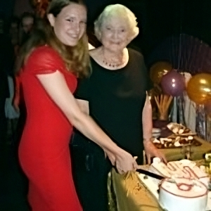

Act 5 Scene 2
When British Rail Property Board and H.C.P. started to negotiate a new lease, the Railway sought a large increase in the rent paid for the arches. It soon became obvious that an enlarged theatre company, which included both H.C.P. and Barts, could better face the prospect and be in a stronger financial position to be offered – and to afford – a lease. The rent required could only be raised if the Theatre capacity could be increased. That meant getting extra land behind the auditorium arch (which the Railway would agree to) and raising the money to pay for the necessary building costs.
Consequently many meetings and negotiations took place between members of both companies’ management teams, concerning a possible amalgamation. Finally, in October 1986, a meeting in the Theatre for all members of the two companies was held to decide whether or not to amalgamate. A number of members were strongly against the proposal. I for one sat at the meeting very sad at the thought that Barts might no longer exist. However, sentiment could not stand in the way of progress, and there was a real possibility that neither company would survive on its own. Sentiment said to me to vote against the proposal; but after listening to all the discussion conscience said to give it a chance. Conscience won, and I voted with a clear majority for a new set-up.
So on 1st January 1987 the new Archway Theatre Company came into being with a 32-year lease. The first production was Goldilocks and the Three Bears. The late Eric Jordan, who had been a professional Theatre Designer, drew up plans for what is now the present Theatre. To increase the seating capacity, it was necessary to turn the auditorium through 180 degrees, and put the new stage outside the Arches. The Theatre already had some funds, much of which had been the contribution of Barts to the new Company, raised money in many ways, and borrowed £36,000 – repayable over 6 years – from Barclays Bank. It is sometimes difficult to visualize, as one stands in the auditorium, that the stage used to be under where the lighting box and the back rows of seats now are.
On Saturday 7th March 1987 the curtain fell on Desperate Hours, the last production in the old Theatre, and the builders moved in. On Tuesday May 22nd the curtain rose on Scapino, after heroic efforts by Mitchells the builders and voluntary work by many company members. Disaster nearly struck that evening: the beer for the new bar arrived only 1 hour before Curtain Up! Incidentally, the bank loan was paid off in 5 years.
In April 1997 came our 100th production in the enlarged Theatre. The play was She Stoops To Conquer which had previously been performed in the old Theatre in 1965. Two of the original cast once again appeared – Miles Beauchamp and the late David White – though this time they played the fathers of their 1965 roles!
In 1990 we organized a celebration of H.C.P.’s Golden Jubilee with a performance of Uncle Vanya, and later that year had a reunion party for old and existing Company members. This year we celebrated 50 years ‘Underneath the Arches’ and at a Cabaret Gala night once again invited a number of our surviving early members, some from a long distance, to help the celebration.
I hope that, over the last few months, I have (with Peter Gwynne’s help) given those of you new to the Theatre an insight into how it all began. We look forward to the future with more plans for our little Theatre in Horley for you our Members who give us such loyal support.
Written by Bette Bunkell – 2002